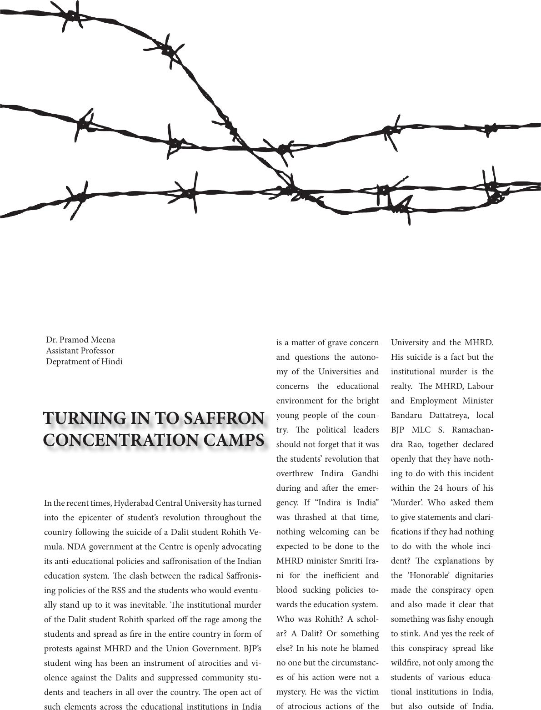

is a matter of grave concern
and questions the autono-
my of the Universities and
concerns the educational
environment for the bright
young people of the coun-
try. e political leaders
should not forget that it was
the students’ revolution that
overthrew Indira Gandhi
during and aer the emer-
gency. If “Indira is India”
was thrashed at that time,
nothing welcoming can be
expected to be done to the
MHRD minister Smriti Ira-
ni for the inecient and
blood sucking policies to-
wards the education system.
Who was Rohith? A schol-
ar? A Dalit? Or something
else? In his note he blamed
no one but the circumstanc-
es of his action were not a
mystery. He was the victim
of atrocious actions of the
University and the MHRD.
His suicide is a fact but the
institutional murder is the
realty. e MHRD, Labour
and Employment Minister
Bandaru Dattatreya, local
BJP MLC S. Ramachan-
dra Rao, together declared
openly that they have noth-
ing to do with this incident
within the 24 hours of his
‘Murder’. Who asked them
to give statements and clari-
cations if they had nothing
to do with the whole inci-
dent? e explanations by
the ‘Honorable’ dignitaries
made the conspiracy open
and also made it clear that
something was shy enough
to stink. And yes the reek of
this conspiracy spread like
wildre, not only among the
students of various educa-
tional institutions in India,
but also outside of India.
TURNING IN TO SAFFRON
CONCENTRATION CAMPS
In the recent times, Hyderabad Central University has turned
into the epicenter of student’s revolution throughout the
country following the suicide of a Dalit student Rohith Ve-
mula. NDA government at the Centre is openly advocating
its anti-educational policies and saronisation of the Indian
education system. e clash between the radical Saronis-
ing policies of the RSS and the students who would eventu-
ally stand up to it was inevitable. e institutional murder
of the Dalit student Rohith sparked o the rage among the
students and spread as re in the entire country in form of
protests against MHRD and the Union Government. BJP’s
student wing has been an instrument of atrocities and vi-
olence against the Dalits and suppressed community stu-
dents and teachers in all over the country. e open act of
such elements across the educational institutions in India
Dr. Pramod Meena
Assistant Professor
Depratment of Hindi